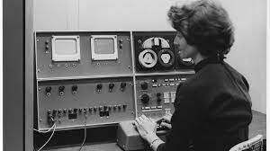

INF1FT

ary Allen Wilkes é advogada, ex-programadora de computadores e designer de lógica, conhecida por seu trabalho com o computador LINC, hoje reconhecido por muitos como o primeiro "computador pessoal" do mundo.
TRABALHOU PARA:
Instituto de Tecnologia de Massachusetts , Universidade de Washington de St. Louis
NACIONALIDADE:
americano
ANIVERSÁRIO:
25 de setembro de 1937 (83 anos)
ATIVIDADES:
Cientista da computação , engenheiro , advogado
Mary Allen Wilkes
(nascida em25 de setembro de 1937em Chicago no Illinois )
é programadora e designer de software, conhecida por seu
trabalho com o computador LINC (in) (Laboratory Instrument Computer)
, considerado o primeiro computador pessoal. Mary Wilkes se formou
no Wellesley College em 1959, onde se formou em filosofia e teologia.
Ela queria ser advogada, mas seus amigos e mentores a desencorajavam
porque ela era uma mulher. Ela está procurando emprego na área de
computação, porque programação de computadores era um campo aberto
às mulheres e porque sua professora de geografia da oitava série
disse a ela em uma discussão em classe: “Mary Allen, quando você
for ótima, será uma programadora ” . Na época, ela não tinha ideia
do que isso significava, mas nunca se esqueceu. Ela finalmente se
tornou advogada em 1975.
Em 1959-1960, Mary Allen Wilkes trabalhou com Oliver Selfridge e Benjamin Gold no projeto de reconhecimento de voz no Lincoln Laboratory do MIT em Lexington , Massachusetts e na programação do IBM 704 e IBM 709 . Ela se juntou ao grupo Digital Computer, também no Lincoln Laboratory, quando o trabalho de design do LINC começou sob a direção de Wesley A. Clark emJunho de 1961. Wesley Clark havia projetado anteriormente os computadores TX-0 e TX-2 no Lincoln Laboratory. Mary Wilkes ajudou a simular a operação LINC durante a fase de projeto do TX-2 , projetar o protótipo do console LINC e escrever o manual do operador para o projeto final do console. Dentro Janeiro de 1963, o grupo LINC deixa o laboratório Lincoln para criar o Centro de Tecnologia da Computação em Ciências Biomédicas no campus de Cambridge , Massachusetts. No verão de 1963, o grupo Linc treinou os primeiros participantes do programa de avaliação LINC, patrocinado pelo National Institutes of Health. Mary Wilkes ensina aos participantes a programação e a linguagem assembly "LAP" (CLICK Assembly Program) para o CLICK de 1024 palavras. Ela também foi co-autora do manual de programação, Programando o LINC com Wesley A. Clark.
No verão de 1964, um grupo central da equipe de desenvolvimento do programa LINC deixou o MIT para estabelecer o Washington University Computer Systems Lab em St. Louis . Mary Wilkes, que viajou o mundo em 1964, juntou-se ao grupo no final do ano. Ela então morou na casa de seus pais em Baltimore até o final de 1965. Ela trabalhou lá em um CLIQUE fornecido pelo Laboratório de Sistemas de Computação. Ela é considerada a primeira usuária de computador pessoal em casa. Fotos foram exibidas na 10 ª festival computador no Museu da História do computador de Mountain View na Califórnia , emnovembro de 2007. Em 1965, a equipe do LINC dobrou o tamanho da memória do LINC para 2.048 palavras de 12 bits, permitindo que Mary Wilkes desenvolvesse um sistema operacional mais sofisticado, o LAP6. LAP6 incorpora uma técnica de edição de rolagem usando um algoritmo proposto por seus colegas, Mishell J. Stucki e Severo M. Ornstein. O LAP6, descrito como "notavelmente bem desenhado pelo ser humano" oferece ao usuário a possibilidade de preparar, editar e manipular documentos (geralmente programas LINC) de forma interativa em tempo real, utilizando o teclado e o monitor LINC, e posteriormente o computador pessoal. As fitas perfuradas do LINC executam a função de rolagem e também oferecem funções de arquivamento interativas para documentos e programas. Os documentos do programa podem ser convertidos em binários e executados. Os usuários podem integrar seus próprios programas ao LAP6 usando um link fornecido pelo sistema e trocar pequenas fitas LINC para compartilhar programas, um primeiro recurso de “código aberto”.
Estudante de Filosofia no Wellesley College, Mary Allen Wilkes trabalhava no MIT e escrevia o sistema operacional de LINC, o primeiro microcomputador da história. Pouco tempo depois, em 1965, ela construiu o seu próprio PC em casa e torna-se a primeira pessoa a ter um computador doméstico da história. 